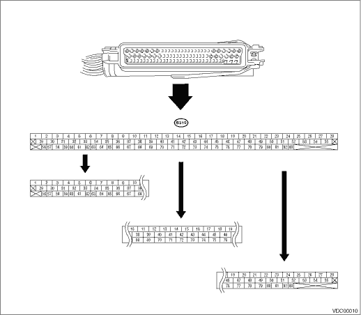

NOTE:
• Terminal numbers in the VDCCM connector are as shown in the figure.
• When the connector is removed from VDCCM, the connector switch closes the circuit between terminals No. 53 and 54. Then, ABS warning light and brake warning light (EBD warning light) illuminates.
|
Description |
Terminal No. (+) — (−) |
Input/Output signal | |
|
Measured value and measuring condition | |||
|
Ignition switch |
28 — 1 |
When the ignition switch is ON, 10 — 15 V. | |
|
ABS wheel speed sensor (Wheel speed sensor) |
Front wheel LH |
19 — 21 |
0.12 — 1 V (at 20 Hz) |
|
Front wheel RH |
13 — 14 | ||
|
Rear wheel LH |
15 — 16 | ||
|
Rear wheel RH |
17 — 18 | ||
|
Yaw rate & lateral G sensor |
Output (Lateral G sensor) |
11 — 64 |
2.2 — 2.8 V, when the vehicle is on level surface |
|
Power supply |
50 — 64 |
When the ignition switch is ON, 10 — 15 V. | |
|
Output (Yaw rate sensor) |
65 — 64 |
Waveform | |
|
Reference (Yaw rate sensor) |
66 — 64 |
2.1 — 2.9 V | |
|
Test |
67 — 64 |
1 V — 5 cycles for a 40 ms pulse signal. | |
|
Ground |
64 |
— | |
|
CAN communication line (+) |
83 — 1 |
2.5 — 1.5 V pulse signal | |
|
CAN communication line (−) |
81 — 1 |
3.5 — 2.5 V pulse signal | |
|
Relay box |
Valve relay power supply |
27 — 1 |
When the ignition switch is ON, 10 — 15 V. |
|
Valve relay drive |
48 — 1 |
When the ignition switch is ON, less than 15 V. | |
|
Motor relay drive |
22 — 1 |
1.5 V or less (ABS/TCS/VDC Operation): 10 V or more (ABS/TCS/VDC not operated) | |
|
Motor monitor |
9 — 1 |
1.5 V or less (ABS/TCS/VDC Operation): 10 V or more (ABS/TCS/VDC not operated) | |
|
VDCH/U |
Front inlet (hold) solenoid valve LH |
24 — 1 |
When the valve turns OFF, 10 — 15 V. When the valve turns ON, less than 1.5 V. |
|
Front inlet (hold) solenoid valve RH |
3 — 1 | ||
|
Rear inlet (hold) solenoid valve LH |
31 — 1 | ||
|
Rear inlet (hold) solenoid valve RH |
23 — 1 | ||
|
Front outlet (decompression) solenoid valve LH |
26 — 1 | ||
|
Front outlet (decompression) solenoid valve RH |
29 — 1 | ||
|
Rear outlet (decompression) solenoid valve LH |
4 — 1 | ||
|
Rear outlet (decompression) solenoid valve RH |
25 — 1 | ||
|
Primary cut solenoid valve |
34 — 1 | ||
|
Secondary cut solenoid valve |
35 — 1 | ||
|
Primary suction solenoid valve |
32 — 1 | ||
|
Secondary suction solenoid valve |
30 — 1 | ||
|
Pressure sensor |
Power supply |
77 — 75 |
When the ignition switch is ON, 4.75 — 5.25 V. |
|
Primary output |
76 — 75 |
0.48 — 0.72 V (when the brake pedal is released) | |
|
Ground |
75 |
— | |
|
Secondary output |
44 — 75 |
0.48 — 0.72 V (when the brake pedal is released) | |
|
VDC indicator light |
72 — 1 |
After turning the ignition switch to ON, less than 1.5 V during 1.5 seconds and 10 — 15 V after 1.5 seconds passed. | |
|
VDC warning light/VDC OFF indicator light |
61 — 1 |
After turning the ignition switch to ON, less than 1.5 V during 1.5 seconds and 10 — 15 V after 1.5 seconds passed. | |
|
ABS warning light |
53 — 1 |
After turning the ignition switch to ON, less than 1.5 V during 2.6 seconds and 10 — 15 V after 1.5 seconds passed. | |
|
Subaru Select Monitor |
38 — 1 |
0 — 12 V pulse signal (in communication) | |
|
VDC OFF switch |
40 — 1 |
When the ignition switch is ON, 10 — 15 V. 0 V (While pressing the switch) | |
|
Ground |
1 |
— | |
|
Ground |
55 |
— | |
|
Brake warning light (EBD warning light) |
54 — 1 |
After turning the ignition switch to ON, less than 1.5 V during 3.6 seconds and 10 — 15 V after 1.5 seconds passed. | |